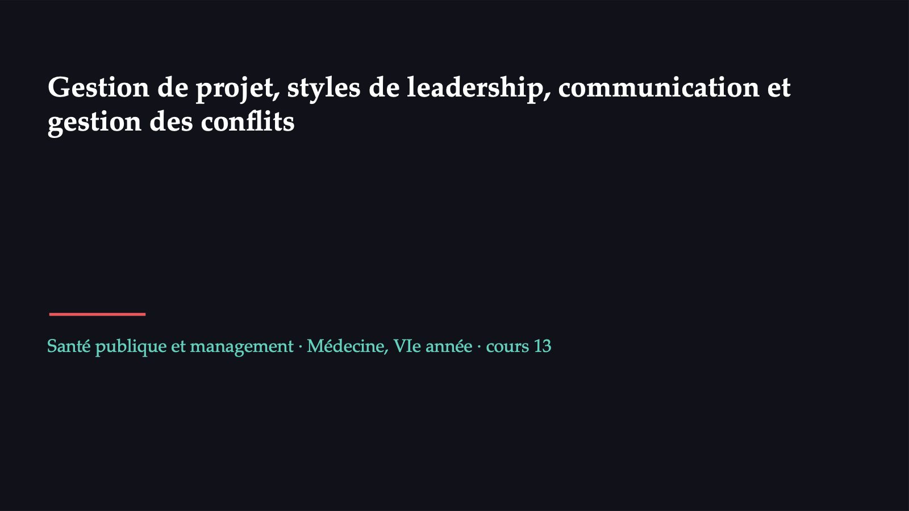
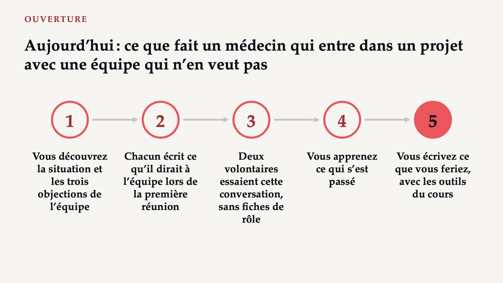
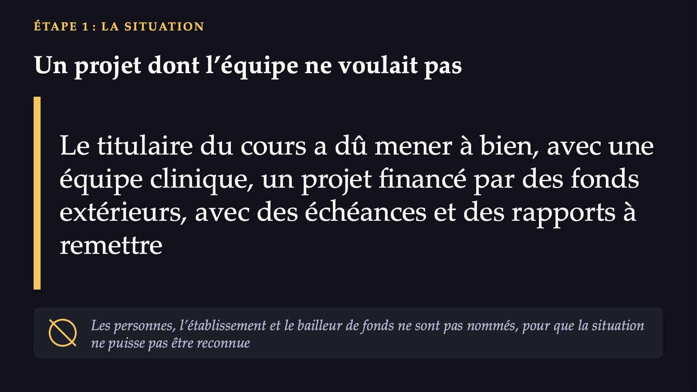
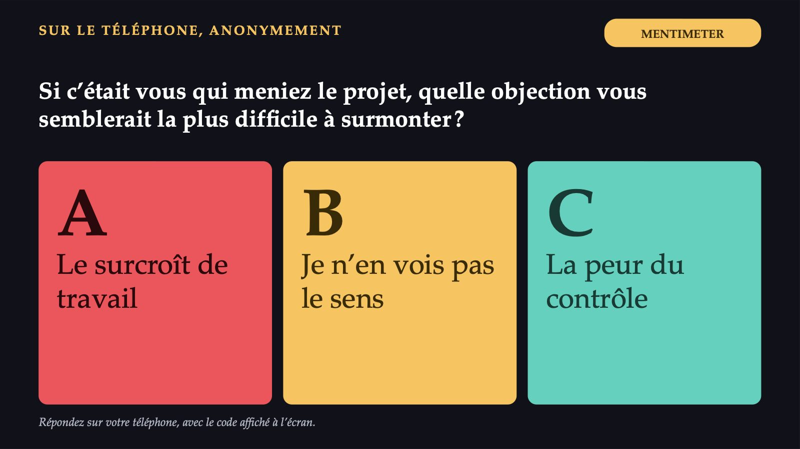
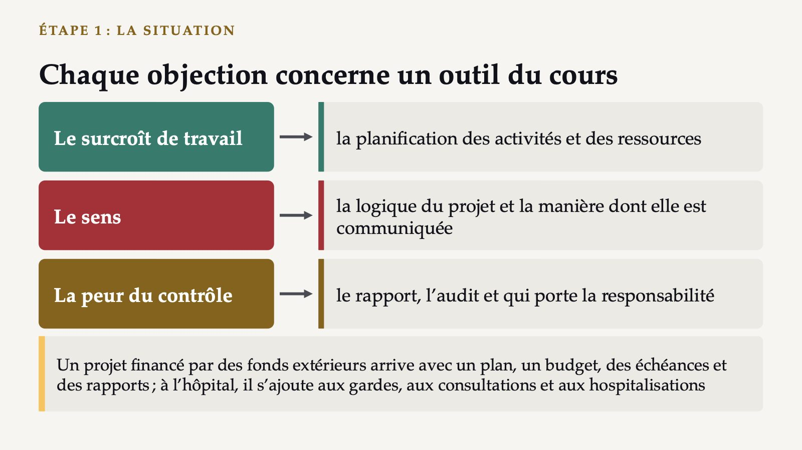
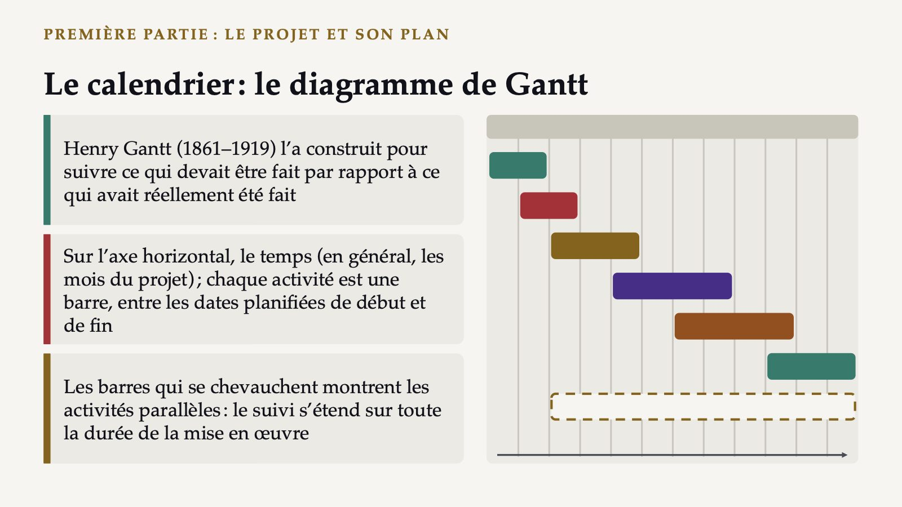
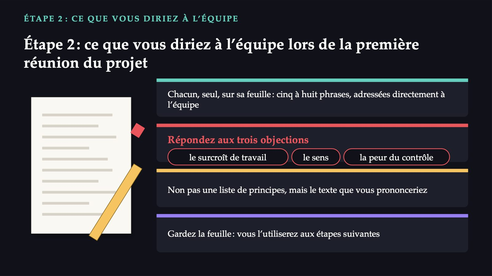
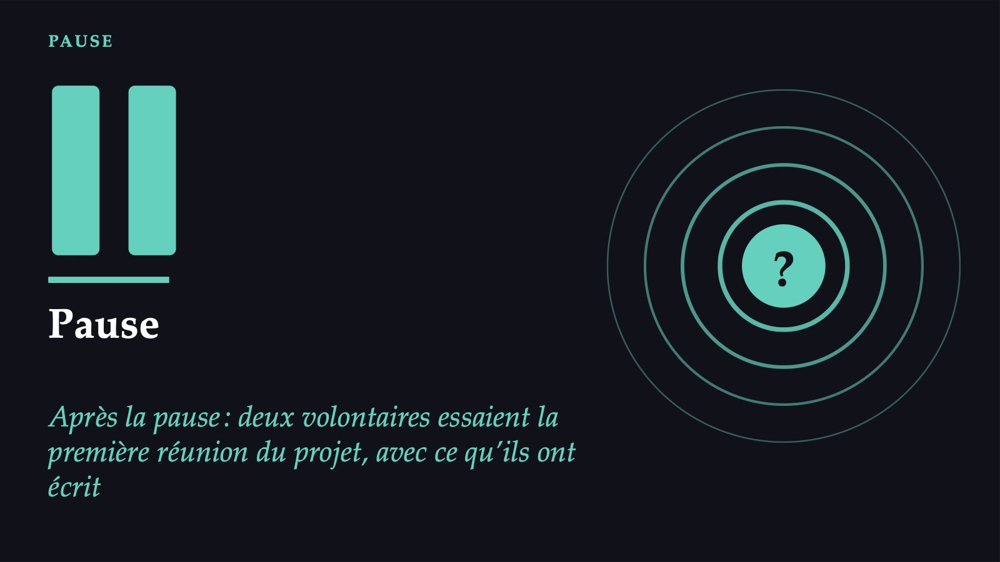
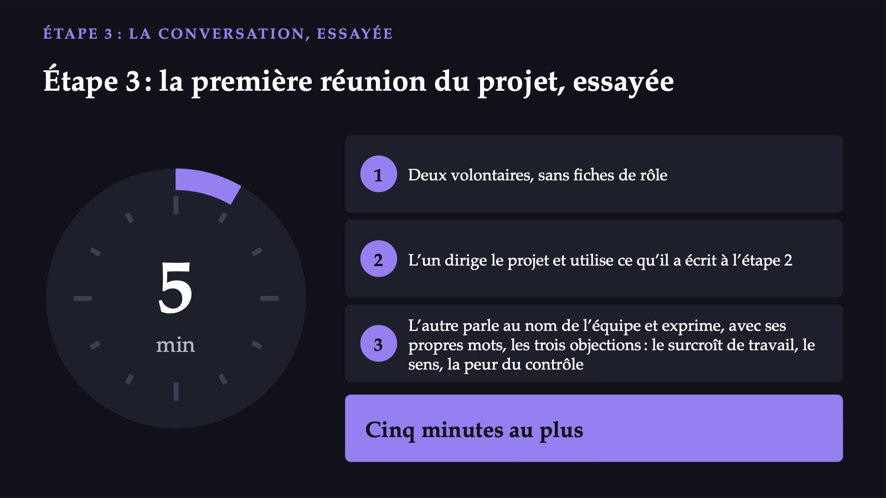
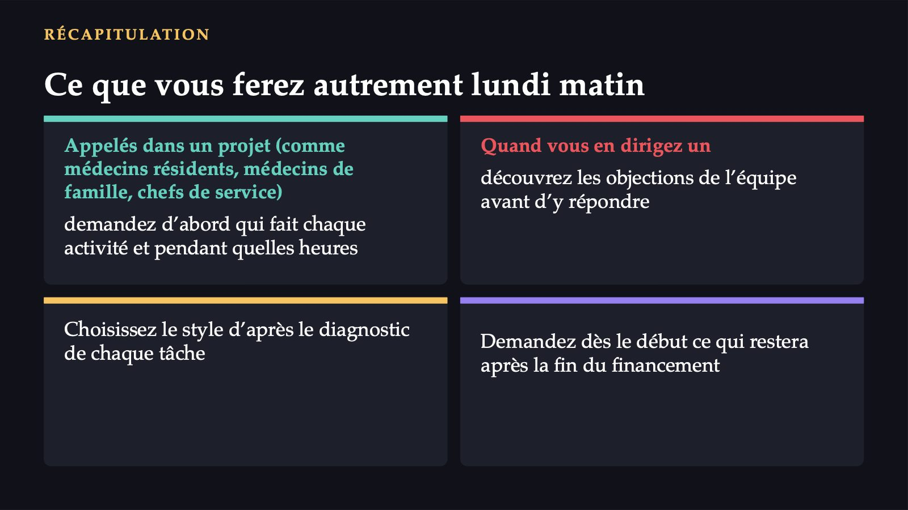

Gestion de projet, styles de leadership, communication et gestion des conflits

1 / 48Bonjour. Le cours d’aujourd’hui a deux moitiés : comment on planifie un projet et comment on conduit les personnes qui le mènent à bien. Une situation vécue par le titulaire du cours les relie : un projet dont l’équipe clinique ne voulait pas. Nous ne commençons pas par la théorie, mais par cette situation.
Le thème de la fiche de la discipline
![OUVERTURE Le thème de la fiche de la discipline « Cours interactif ; jeu de rôle : conversations difficiles au sein de l’équipe clinique » (fiche de la discipline, cours 13) Le projet le cycle, le cadre logique, le diagramme de Gantt, le budget, les sources de financement : le Plan national de relance et de résilience (PNRR), EU4Health, Horizon Europe Les personnes leadership et management, les styles de leadership, la communication dans l’organisation et dans les situations difficiles, la gestion des conflits, la négociation raisonnée](diapozitive/C13/002.jpg) 2 / 48
2 / 48La fiche de la discipline donne à ce cours une méthode précise : un cours interactif et le jeu de rôle d’une conversation difficile au sein de l’équipe clinique. Le contenu a deux parties. La première porte sur le projet : son cycle, le cadre logique, le diagramme de Gantt, le budget et les sources de financement, c’est-à-dire le Plan national de relance et de résilience, le programme EU4Health et le programme Horizon Europe. La seconde porte sur les personnes : la différence entre leadership et management, les styles de leadership, la communication, les conversations difficiles, les conflits et la négociation. La conversation difficile sur laquelle vous travaillez aujourd’hui n’est pas écrite d’avance sur une fiche de rôle ; elle vient d’une situation réelle.
1

3 / 48Aujourd’hui, vous faites ce que fait un médecin qui entre dans un projet avec une équipe qui n’en veut pas. Vous découvrez d’abord la situation et les trois objections de l’équipe. Ensuite, chacun écrit sur sa feuille ce qu’il dirait à l’équipe lors de la première réunion du projet. Deux volontaires essaient ensuite la conversation, devant tous, sans fiches de rôle. Après cela, vous apprenez ce qui s’est passé. À la fin, vous écrivez ce que vous feriez, avec les outils du cours. Le téléphone ne vous sert que pour des questions d’opinion, sans bonne ni mauvaise réponse.
Le titulaire du cours a dû mener à bien, avec une équipe clinique, un projet financé par des fonds extérieurs, avec des échéances et des rapports à remettre

4 / 48La situation est réelle. Le titulaire du cours a dû mener à bien, avec une équipe clinique, un projet financé par des fonds extérieurs, avec des échéances et des rapports à remettre. Les personnes, l’établissement et le bailleur de fonds ne sont pas nommés, pour que la situation ne puisse pas être reconnue ; pour la même raison, vous ne connaîtrez ni l’année ni les montants. C’était une équipe clinique : les personnes qui devaient faire le projet étaient celles qui soignaient les patients.
L’équipe ne voulait pas du projet, pour trois raisons
![ÉTAPE 1 : LA SITUATION L’équipe ne voulait pas du projet, pour trois raisons Que diriez-vous à cette équipe lors de la première réunion du projet ? Le surcroît de travail le projet s’ajoutait au travail habituel, sans temps ni argent supplémentaires pour les personnes Ils n’en voyaient pas le sens l’équipe ne croyait pas que le projet changerait quoi que ce soit pour les patients ou pour eux-mêmes La peur du contrôle les rapports, les audits et la responsabilité de l’argent public leur faisaient peur](diapozitive/C13/005.jpg) 5 / 48
5 / 48L’équipe ne voulait pas du projet et avait trois raisons. La première était le surcroît de travail : le projet s’ajoutait au travail habituel, sans temps ni argent supplémentaires pour les personnes. La deuxième : ils n’en voyaient pas le sens ; l’équipe ne croyait pas que le projet changerait quoi que ce soit pour les patients ou pour eux-mêmes. La troisième était la peur du contrôle : les rapports, les audits et la responsabilité de l’argent public leur faisaient peur. La question sur laquelle vous travaillez aujourd’hui est simple et difficile : que diriez-vous à cette équipe lors de la première réunion du projet ?
A

6 / 48Prenez votre téléphone. La question porte sur vous et n’a ni bonne ni mauvaise réponse : si c’était vous qui meniez le projet, laquelle des trois objections vous semblerait la plus difficile à surmonter ? Personne ne voit qui a choisi quoi.
Chaque objection concerne un outil du cours

7 / 48Vous avez vu quelle objection vous semble la plus difficile. Chacune des trois concerne un outil du cours. Le surcroît de travail relève de la planification des activités et des ressources. Le sens relève de la logique du projet et de la manière dont elle est communiquée. La peur du contrôle relève du rapport, de l’audit et de la question de savoir qui porte la responsabilité. Un projet financé par des fonds extérieurs arrive avec un plan, un budget, des échéances et des rapports ; dans un établissement de santé, il s’ajoute aux gardes, aux consultations et aux hospitalisations, et l’équipe qui le mène est celle qui soigne les patients. La première moitié du cours vous donne les outils du plan.
Qu’est-ce qu’un projet
![PREMIÈRE PARTIE : LE PROJET ET SON PLAN Qu’est-ce qu’un projet La règle de travail du cours : si le contenu s’élargit, le temps ou le coût augmentent ; si le temps se raccourcit, le coût augmente ou le contenu diminue Project Management Institute (PMI) un effort temporaire, entrepris pour créer un produit, un service ou un résultat unique Il a un début et une fin distincts et, au minimum, un calendrier, un budget, un contenu et des ressources Temporaire il se termine à une date fixée d’avance, et son équipe se défait Unique il produit quelque chose qui n’existait pas sous cette forme](diapozitive/C13/008.jpg) 8 / 48
8 / 48Le Project Management Institute définit le projet comme un effort temporaire, entrepris pour créer un produit, un service ou un résultat unique, avec un début et une fin distincts et, au minimum, un calendrier, un budget, un contenu et des ressources. Pour le médecin, deux mots comptent. Temporaire : le projet se termine à une date fixée d’avance, et son équipe se défait à ce moment-là. Unique : il produit quelque chose qui n’existait pas sous cette forme, un service équipé, un registre, un nouveau circuit des patients, un programme de formation. Le calendrier, le budget et le contenu sont utilisés dans ce cours comme trois contraintes du plan, liées par une règle de travail, et non par une norme citée du guide du PMI : si le contenu s’élargit, le temps ou le coût augmentent ; si le temps se raccourcit, le coût augmente ou le contenu diminue. Les ressources comprennent les personnes, et dans un établissement de santé, les personnes du projet peuvent être celles qui soignent les patients.
Le projet et la routine du service
![PREMIÈRE PARTIE : LE PROJET ET SON PLAN Le projet et la routine du service Si le plan ne dit pas qui fait chaque activité et avec quel temps, le projet repose sur les heures supplémentaires de l’équipe : la première objection La difficulté apparaît là où les mêmes personnes font les deux travaux La routine admissions, gardes, consultations, sorties ; elle se répète chaque jour, sans date de fin, selon des procédures connues, avec le personnel à ses postes Le projet les échéances du bailleur de fonds, un résultat unique, une date de fin](diapozitive/C13/009.jpg) 9 / 48
9 / 48L’activité de routine d’un service a les caractéristiques opposées à celles du projet. Les admissions, les gardes, les consultations et les sorties se répètent chaque jour, sans date de fin, selon des procédures connues, avec le personnel à ses postes. Un hôpital fait les deux choses en même temps : il fonctionne au quotidien et il mène des projets. La difficulté apparaît là où les mêmes personnes font les deux travaux. Le travail de projet a les échéances du bailleur de fonds, le travail de routine a les patients qui sont devant eux. Si le plan du projet ne dit pas qui fait chaque activité et avec quel temps, le projet repose en silence sur les heures supplémentaires de l’équipe. C’est la première objection de la situation du début.
1
![PREMIÈRE PARTIE : LE PROJET ET SON PLAN Le cycle d’un projet : cinq phases (fiche de la discipline) 1 L’identification le problème réel, qui est touché, quelles en sont les causes ; l’arbre à problèmes et l’analyse des parties prenantes 2 La formulation les objectifs, les activités, le budget, le calendrier ; l’outil de cette phase est le cadre logique 3 La mise en œuvre les activités planifiées, avec leurs achats et leurs contrats 4 Le suivi il accompagne la mise en œuvre pendant toute sa durée 5 L’évaluation les objectifs atteints, les coûts, ce qui demeure après le financement ; ses leçons alimentent le projet suivant](diapozitive/C13/010.jpg) 10 / 48
10 / 48La fiche de la discipline énumère cinq phases du cycle du projet. L’identification part d’un problème réel : qui est touché, quelles en sont les causes, qui a intérêt à le résoudre. On utilise l’arbre à problèmes, avec les causes sous le problème et les effets au-dessus, et l’analyse des parties prenantes, c’est-à-dire des personnes, des groupes et des institutions qui peuvent aider le projet ou être touchés par lui. La formulation fixe les objectifs, les activités, le budget et le calendrier, à l’aide du cadre logique. La mise en œuvre réalise les activités planifiées, avec leurs achats et leurs contrats. Le suivi est le quatrième dans la liste de la fiche, mais il ne vient pas après la mise en œuvre : il l’accompagne pendant toute sa durée. L’évaluation juge, à la fin, si le projet a atteint ses objectifs, à quel coût, et si ce qu’il a construit demeure après la fin du financement. Ses leçons alimentent l’identification du projet suivant ; c’est pourquoi on parle d’un cycle.
Le cadre logique : la hiérarchie des objectifs, lue de bas en haut
![PREMIÈRE PARTIE : LE PROJET ET SON PLAN Le cadre logique : la hiérarchie des objectifs, lue de bas en haut Les activités ce que fait l’équipe, avec quelles ressources Les résultats immédiats par exemple, un centre équipé, des personnes formées L’objectif spécifique le bénéfice direct pour le groupe auquel s’adresse le projet, à la fin du projet L’objectif général un changement à long terme de l’état de santé, auquel le projet contribue, avec d’autres facteurs La règle de travail du cours : le chef de projet répond de l’objectif spécifique, non de l’objectif général Les formulaires, les rapports et les échéances sont sur la marche du bas ; le sens du projet se voit sur les marches du haut : la deuxième objection](diapozitive/C13/011.jpg) 11 / 48
11 / 48Le cadre logique est la méthode par laquelle on construit un projet, de l’analyse du problème jusqu’à la matrice qui le résume : l’analyse du problème, des parties prenantes, des objectifs et des stratégies. L’objectif principal se décompose en objectifs plus petits, faciles à gérer, disposés dans un arbre des objectifs. La hiérarchie des objectifs a quatre niveaux et se lit de bas en haut, comme une chaîne « si…, alors… ». Les activités produisent les résultats immédiats ; si les résultats existent, l’objectif spécifique est atteint, le bénéfice direct pour le groupe auquel s’adresse le projet ; si l’objectif spécifique est atteint, le projet contribue à l’objectif général, un changement à long terme de l’état de santé. Le projet n’atteint pas seul l’objectif général ; c’est pourquoi la règle de travail de ce cours est que le chef de projet répond de l’objectif spécifique. La hiérarchie concerne aussi la deuxième objection de l’équipe. Les formulaires, les rapports et les échéances se trouvent sur la marche du bas ; l’objectif spécifique et l’objectif général, sur les marches du haut. Celui qui dirige le projet choisit à quelle marche la discussion avec l’équipe s’arrête.
La matrice du cadre logique
![PREMIÈRE PARTIE : LE PROJET ET SON PLAN La matrice du cadre logique Quatre colonnes la description du projet (logique d’intervention) les indicateurs mesurables les sources de vérification les hypothèses Les lignes : les niveaux de la hiérarchie des objectifs À la verticale : si nous réalisons les activités et si les hypothèses se confirment, nous obtenons les résultats, et ainsi de suite jusqu’à l’objectif général À l’horizontale : avec quel indicateur et à partir de quelle source chaque niveau sera suivi et évalué](diapozitive/C13/012.jpg) 12 / 48
12 / 48La matrice du cadre logique résume le projet dans un tableau. Elle a quatre colonnes : la description du projet, c’est-à-dire la logique d’intervention, les indicateurs mesurables, les sources de vérification, d’où vient la preuve, et les hypothèses. Les lignes sont les niveaux de la hiérarchie des objectifs. La matrice se lit de deux façons. À la verticale, la première et la dernière colonnes montrent la chaîne : si nous réalisons les activités et si les hypothèses se confirment, nous obtenons les résultats, et ainsi de suite jusqu’à l’objectif général. À l’horizontale, les colonnes du milieu montrent comment chaque niveau sera suivi et évalué : avec quel indicateur et à partir de quelle source.
Valeurs hypothétiques. Exemple construit, sans chiffres : la matrice d’un projet de dépistage du cancer colorectal
![PREMIÈRE PARTIE : LE PROJET ET SON PLAN Valeurs hypothétiques. Exemple construit, sans chiffres : la matrice d’un projet de dépistage du cancer colorectal L’objectif général : la baisse de la mortalité par cancer colorectal dans le département · l’indicateur : la mortalité spécifique · la source : les statistiques officielles de mortalité L’objectif spécifique la hausse de la couverture du dépistage dans la population éligible la proportion de la population éligible testée le registre du programme l’hypothèse : la population accepte l’invitation Les résultats immédiats des centres fonctionnels, du personnel formé le nombre de centres ouverts et de personnes formées les rapports du projet, les feuilles de présence le personnel formé reste en poste Les activités l’achat de l’équipement, la formation, la campagne d’information le budget exécuté, les sessions tenues les factures, les contrats, les registres de la campagne le financement arrive à temps](diapozitive/C13/013.jpg) 13 / 48
13 / 48Voici un exemple construit de matrice, sans chiffres, comme modèle de remplissage, pour un projet de dépistage du cancer colorectal. L’objectif général est la baisse de la mortalité par cancer colorectal dans le département, mesurée par la mortalité spécifique, à partir des statistiques officielles. L’objectif spécifique est la hausse de la couverture du dépistage dans la population éligible, mesurée par la proportion des personnes testées, à partir du registre du programme, avec l’hypothèse que la population accepte l’invitation. Les résultats immédiats sont les centres fonctionnels et le personnel formé, avec l’hypothèse que le personnel formé reste en poste. Les activités sont l’achat de l’équipement, la formation et la campagne d’information, avec l’hypothèse que le financement arrive à temps. La dernière colonne contient des conditions que l’équipe ne maîtrise pas. Les activités : l’achat de l’équipement, la formation, la campagne d’information · le budget exécuté, les sessions tenues · les factures, les contrats, les registres de la campagne · le financement arrive à temps
Trois erreurs fréquentes quand on remplit la matrice
![PREMIÈRE PARTIE : LE PROJET ET SON PLAN Trois erreurs fréquentes quand on remplit la matrice Les indicateurs se formulent selon les critères SMART (le cours sur la planification stratégique) ! L’indicateur sans source de vérification nous savons ce que nous mesurons, mais non d’où nous prenons les données ! La confusion entre l’objectif spécifique et l’objectif général davantage de personnes testées, c’est l’objectif spécifique ; moins de décès, l’objectif général ! Les hypothèses oubliées un projet bien conçu peut échouer si une hypothèse critique ne se confirme pas](diapozitive/C13/014.jpg) 14 / 48
14 / 48Trois erreurs sont fréquentes dans les exercices de ce cours. La première est l’indicateur sans source de vérification : un indicateur que personne ne peut prouver ne sert ni au suivi ni à l’évaluation. La deuxième est la confusion entre l’objectif spécifique et l’objectif général : davantage de personnes testées, c’est l’objectif spécifique ; moins de décès, c’est l’objectif général. La troisième, ce sont les hypothèses oubliées, les conditions extérieures dont le projet a besoin et que l’équipe ne maîtrise pas, comme le financement qui arrive à temps ou le personnel qui reste en poste. Un projet bien conçu peut échouer si une hypothèse critique ne se confirme pas. Les indicateurs de la matrice se formulent selon les critères SMART, que vous avez travaillés au cours sur la planification stratégique.
Le calendrier : le diagramme de Gantt

15 / 48Le cadre logique dit ce que veut le projet ; le calendrier dit quand chaque chose se fait. Le diagramme de Gantt porte le nom de Henry Gantt, qui l’a construit pour suivre ce qui devait être fait par rapport à ce qui avait réellement été fait. Sur l’axe horizontal se trouve le temps, en général les mois du projet, et chaque activité est une barre qui commence et se termine aux dates planifiées. Les barres qui se chevauchent montrent les activités parallèles ; le suivi, par exemple, s’étend sur toute la durée de la mise en œuvre. Vous avez vu le modèle logique et le calendrier des activités au cours sur la planification stratégique ; ici, ils sont appliqués à un projet à échéance fixe.
Le chemin critique
![PREMIÈRE PARTIE : LE PROJET ET SON PLAN Le chemin critique Certaines activités dépendent d’autres : le personnel ne peut pas être formé sur un équipement qui n’a pas été acheté, et l’équipement ne peut pas être acheté avant la signature du contrat La méthode du chemin critique (Critical Path Method) trouve les activités qui fixent la durée de tout le projet Une activité du chemin critique n’a pas de marge : si elle prend du retard et que ce retard n’est pas rattrapé sur les activités qui suivent sur le même chemin, la date de fin du projet est déplacée Les activités hors du chemin critique peuvent prendre du retard, dans certaines limites, sans déplacer la date de fin](diapozitive/C13/016.jpg) 16 / 48
16 / 48Certaines activités dépendent d’autres. Le personnel ne peut pas être formé sur un équipement qui n’a pas encore été acheté, et l’équipement ne peut pas être acheté avant la signature du contrat. La méthode du chemin critique trouve les activités les plus critiques, celles qui fixent la durée de tout le projet, afin que les ressources importantes leur soient consacrées ; avec le diagramme de Gantt, c’est l’une des techniques utilisées pour le calendrier d’un projet. Une activité du chemin critique n’a pas de marge : si elle prend du retard et que ce retard n’est pas rattrapé sur les activités qui suivent sur le même chemin, la date de fin de tout le projet est déplacée. Les activités hors du chemin critique peuvent prendre du retard, dans certaines limites, sans déplacer la date de fin.
Le calendrier et les personnes
 17 / 48
17 / 48Pour l’équipe de la situation du titulaire, le calendrier a des conséquences directes sur les personnes. Quand l’échéance du bailleur de fonds est fixe et que le calendrier est serré, les activités gardent peu de marge. Un retard sur le chemin critique, qui déplacerait la date de fin, doit alors être rattrapé, par exemple avec des heures supplémentaires. Un calendrier qui place les activités du projet par-dessus les gardes et les consultations, sans dire qui les fait et quand, fait du surcroît de travail une règle du projet.
Le budget, les rapports et la demande de financement
![PREMIÈRE PARTIE : LE PROJET ET SON PLAN Le budget, les rapports et la demande de financement La demande de financement relie tout : la justification du besoin sur des données réelles, des objectifs SMART issus du cadre logique, le calendrier, le budget éligible, le plan de suivi et ce qui reste après le financement Les rapports et les audits prouvent que l’argent public a été dépensé pour ce qui avait été promis : c’est là que se trouve la troisième objection, la peur du contrôle Le budget, par catégories personnel équipement services déplacements communication audit coûts indirects Les règles d’éligibilité diffèrent d’un programme à l’autre ; elles se lisent dans le guide du demandeur de chaque appel](diapozitive/C13/018.jpg) 18 / 48
18 / 48Le budget d’un projet financé par des fonds extérieurs se construit par catégories de dépenses : personnel, équipement, services, déplacements, communication, audit, coûts indirects. Il respecte les règles d’éligibilité du programme qui le finance ; les règles diffèrent d’un programme à l’autre et se lisent dans le guide du demandeur de chaque appel. C’est là que se trouve la troisième objection de l’équipe, la peur du contrôle. Les rapports et les audits ont une raison précise : ils prouvent que l’argent public a été dépensé pour ce qui avait été promis. La demande de financement relie tous ces outils : la justification du besoin, avec des données réelles sur le problème de santé ; les objectifs issus du cadre logique, formulés selon les critères SMART ; le plan d’activités, avec son calendrier ; le budget ; le plan de suivi, qui dit comment les indicateurs seront suivis et ce qui restera après la fin du financement. L’évaluateur de la demande juge aussi la cohérence entre ces parties.
31 août 2026
 19 / 48
19 / 48Outre les sources habituelles du système de santé, présentées au cours sur le financement, les projets des hôpitaux sont financés par trois grands instruments européens, aux buts différents. Le PNRR est financé par la facilité pour la reprise et la résilience de l’instrument NextGenerationEU et finance des investissements et des réformes nationaux. La communication de la Commission du 4 juin 2025 constatait qu’il restait aux États membres 454 jours pour réaliser les réformes et les investissements de leurs plans. Tous les jalons et toutes les cibles devaient être atteints au plus tard le 31 août 2026, et aucune action entreprise après cette date ne peut plus être prise en compte dans l’évaluation des demandes de paiement. Les dernières demandes de paiement devaient être présentées au plus tard le 30 septembre 2026, et tous les paiements doivent être effectués au plus tard le 31 décembre 2026. Le cours en déduit, et la déduction n’appartient pas à la Commission, que l’échéance d’août a laissé peu de marge aux activités des établissements bénéficiaires. La situation du titulaire ne dit pas qui a financé le projet ; ces échéances ne décrivent pas son projet. Le volet santé du PNRR de la Roumanie et l’état de ses investissements après la révision du plan n’ont pas pu être vérifiés à partir de la source officielle pour ce cours.
Où trouver l’argent (2) : EU4Health et Horizon Europe
![PREMIÈRE PARTIE : LE PROJET ET SON PLAN Où trouver l’argent (2) : EU4Health et Horizon Europe PNRR : les réformes et les investissements du plan d’un État EU4Health : le programme de santé de l’Union Horizon Europe : la recherche et l’innovation EU4Health, le programme de santé de l’Union, 2021–2027 : un budget initial de 5,3 milliards d’euros, ramené à 4,4 milliards après la révision du cadre financier pluriannuel ; règlement (UE) 2021/522 Horizon Europe, la recherche et l’innovation : 93,5 milliards d’euros pour 2021–2027 ; la santé, dans le deuxième pilier, par le pôle thématique Santé EU4Health, budget initial 5,3 EU4Health, après la révision 4,4 Horizon Europe, 2021–2027 93,5 milliards d’euros](diapozitive/C13/020.jpg) 20 / 48
20 / 48EU4Health est le programme de santé de l’Union européenne pour la période 2021–2027. Il a été établi par le règlement (UE) 2021/522 ; il prépare la voie vers une Union européenne de la santé et poursuit quatre objectifs généraux et dix objectifs spécifiques. Son budget initial, de 5,3 milliards d’euros, a été ramené à 4,4 milliards d’euros après la révision du cadre financier pluriannuel. Horizon Europe est le programme de l’Union pour la recherche et l’innovation ; après la révision à mi-parcours, le montant indicatif pour 2021–2027 est de 93,5 milliards d’euros. La recherche en santé est financée dans le deuxième pilier, « Global Challenges and European Industrial Competitiveness », c’est-à-dire problématiques mondiales et compétitivité industrielle européenne, par le pôle thématique Santé. Le 16 juillet 2025, la Commission a proposé le programme pour 2028–2034, avec un budget proposé de 175 milliards d’euros. La différence se retient simplement : le PNRR finance les réformes et les investissements du plan d’un État, EU4Health est le programme de santé de l’Union, et Horizon Europe finance la recherche et l’innovation.
Étape 2 : ce que vous diriez à l’équipe lors de la première réunion du projet

21 / 48C’est maintenant votre tour. Chacun écrit, seul, sur sa feuille, ce qu’il dirait à l’équipe lors de la première réunion du projet : cinq à huit phrases, adressées directement à l’équipe, qui répondent aux trois objections, le surcroît de travail, le sens et la peur du contrôle. N’écrivez pas une liste de principes, mais le texte que vous prononceriez, avec vos propres mots. Ce que vous avez vu jusqu’ici peut vous aider : qui fait chaque activité et quand, à quelle marche de la hiérarchie des objectifs vous menez la discussion, qui porte les rapports. Gardez la feuille ; vous l’utiliserez ensuite.
?

22 / 48Nous nous arrêtons ici. À la reprise, deux d’entre vous essaieront la première réunion du projet, devant tous, avec ce qu’ils ont écrit. Réfléchissez si vous voulez être l’un d’eux.
5

23 / 48Deux volontaires essaient maintenant la première réunion du projet, sans fiches de rôle. L’un dirige le projet et utilise ce qu’il a écrit à l’étape 2. L’autre parle au nom de l’équipe et exprime, avec ses propres mots, les trois objections : le surcroît de travail, le sens, la peur du contrôle ; il n’invente pas d’autres objections. La conversation dure au plus cinq minutes. Les autres écoutent attentivement : après la conversation, chacun peut dire ce qu’il a entendu.
Ce que vous avez entendu
24 / 48D’abord, tous en même temps, montrez de la main quelle objection est restée, pour vous, sans réponse : un doigt pour le surcroît de travail, deux pour le sens, trois pour la peur du contrôle. Dites maintenant, à tour de rôle, ce que vous avez entendu. Trois questions vous aident. Quelle objection a reçu une réponse ? Quelle objection est restée sans réponse ? Quelle phrase a changé le ton de la conversation ? Il n’y a pas de bonne variante ; chaque observation s’appuie sur ce qui a été effectivement dit, non sur ce qui aurait dû être dit. Merci aux deux volontaires.
Leadership et management
![DEUXIÈME PARTIE : LE LEADERSHIP ET LA COMMUNICATION Leadership et management Un bon plan ne convainc pas à lui seul une équipe qui ne voit pas le sens du projet Warren Bennis : beaucoup d’organisations sont suradministrées et sous-dirigées Les managers sont, en règle générale, nommés à leur fonction ; quelqu’un peut exercer un leadership sans fonction formelle Le management planification, organisation, direction (l’orientation des personnes) et contrôle Le leadership une relation d’influence sociale entre des personnes qui dépendent les unes des autres pour atteindre un but](diapozitive/C13/025.jpg) 25 / 48
25 / 48Ce qu’on a vu dans la conversation va au-delà du plan. Le leadership et le management ne sont pas la même chose, mais ils ne s’excluent pas non plus. Le management est un processus fait de planification, d’organisation, de direction et de contrôle ; le leadership est une relation d’influence sociale entre deux personnes ou plus, qui dépendent les unes des autres pour atteindre un but. Les managers sont, en règle générale, nommés à leur fonction, mais quelqu’un peut exercer un leadership sans fonction formelle. Un bon manager a souvent besoin d’exercer un leadership, et un leadership efficace demande, à son tour, la capacité de fixer des objectifs, de planifier, de décider et de contrôler. Warren Bennis, professeur à l’Université de Californie du Sud, disait que beaucoup d’organisations sont suradministrées et sous-dirigées. La première moitié du cours, le cadre logique, le calendrier et le budget, relevait du management. La situation du titulaire en montre la limite : un bon plan ne convainc pas à lui seul une équipe qui ne voit pas le sens du projet.
Les styles de leadership
![DEUXIÈME PARTIE : LE LEADERSHIP ET LA COMMUNICATION Les styles de leadership Aucun style n’est bon dans toutes les situations : l’urgence demande la décision autocratique ; une décision complexe, qui demande l’engagement de l’équipe, se prend de manière participative ; la liberté presque totale ne convient qu’à des experts autonomes Le continuum de Tannenbaum et Schmidt (années 1950) : du style autoritaire à une très grande liberté des personnes dirigées Autocratique centré sur le chef Participatif les personnes sont consultées et associées La liberté totale (« free-rein ») les membres décident seuls, le leader renonce au rôle actif « Laissez-faire » l’absence de leadership ; la confiance de l’équipe dans son chef et dans l’organisation diminue](diapozitive/C13/026.jpg) 26 / 48
26 / 48Une classification classique, le continuum proposé par Tannenbaum et Schmidt dans les années 1950, place le leader sur une ligne continue, du style autoritaire jusqu’à une très grande liberté des personnes dirigées. Les chercheurs qui ont suivi l’ont divisé en trois styles : autocratique, centré sur le chef ; participatif, dans lequel les personnes sont consultées et associées ; et le style dans lequel les membres reçoivent le travail et décident seuls de la manière de le faire, le leader renonçant au rôle actif de direction. Ce dernier est proche du style « laissez-faire », décrit comme l’absence de leadership : le leader évite la responsabilité et l’engagement, et la confiance de l’équipe dans son chef et dans l’organisation diminue. La recommandation de ce cours est qu’aucun style n’est bon dans toutes les situations. En situation d’urgence, la décision autocratique est celle qui convient : une réanimation ne se décide pas par un vote. Une décision complexe, qui demande l’engagement de l’équipe, se prend mieux de manière participative. La liberté presque totale ne convient qu’à des experts autonomes et compétents ; avec des débutants, elle mène à la dérive.
Le leadership transactionnel et le leadership transformationnel
![DEUXIÈME PARTIE : LE LEADERSHIP ET LA COMMUNICATION Le leadership transactionnel et le leadership transformationnel Des études de corrélation : le style et la satisfaction vont ensemble ; elles ne montrent pas que le style produit la satisfaction Une synthèse systématique, chez les infirmières : le plus de corrélations positives avec la satisfaction au travail, pour le style transformationnel ; les styles passif-évitant et laissez-faire, corrélés négativement Transactionnel la structure et une récompense en échange du comportement souhaité ; il maintient le fonctionnement courant Transformationnel une vision que les personnes font leur ; il conduit une équipe à travers un changement](diapozitive/C13/027.jpg) 27 / 48
27 / 48Une deuxième distinction porte sur ce que le leader offre à l’équipe. Le leader transactionnel conduit l’équipe vers l’accomplissement de la tâche en établissant la structure et en offrant une récompense en échange du comportement souhaité ; le leadership transactionnel maintient le fonctionnement courant, les gardes, les rapports, la récompense de l’effort. Le leader transformationnel change les choses en profondeur, par une vision que les personnes font leur ; le leadership transformationnel est celui qui conduit une équipe à travers un changement. Une synthèse systématique des études sur les styles de leadership et la satisfaction au travail des infirmières a trouvé le plus de corrélations positives pour le style transformationnel ; les styles passif-évitant et laissez-faire ont été corrélés négativement à la satisfaction dans tous les cas, et le style transactionnel a présenté des corrélations à la fois positives et négatives. Ce sont des études de corrélation : elles montrent que le style et la satisfaction vont ensemble, non que le style produit la satisfaction. La recommandation de ce cours est de combiner les deux : transactionnel pour le fonctionnement quotidien, transformationnel pour le changement.
Le leadership situationnel : le modèle SLII
![DEUXIÈME PARTIE : LE LEADERSHIP ET LA COMMUNICATION Le leadership situationnel : le modèle SLII À chaque niveau, le style de même numéro : D1 → S1, D2 → S2, D3 → S3, D4 → S4 Hersey et Blanchard : le leader adapte son style à la capacité et à la disponibilité des membres de l’équipe ; le cours enseigne la variante de Blanchard, le modèle du leadership situationnel II (SLII) Les niveaux de développement, pour une tâche donnée D1 compétence faible, engagement élevé D2 compétence faible à partielle, engagement faible D3 compétence moyenne à élevée, engagement variable D4 compétence élevée, engagement élevé Les styles S1 directif S2 d’accompagnement S3 de soutien S4 de délégation](diapozitive/C13/028.jpg) 28 / 48
28 / 48Le modèle du leadership situationnel, proposé par Paul Hersey et Kenneth Blanchard et connu aussi comme la théorie du cycle de vie du leadership, demande au leader d’adapter son style à la capacité et à la disponibilité des membres de l’équipe. Les deux auteurs ont ensuite développé des variantes séparées. Le cours enseigne celle de Blanchard, le modèle du leadership situationnel II, abrégé SLII. Il répartit les personnes, pour une tâche donnée, en quatre niveaux de développement, selon la compétence et l’engagement : D1, compétence faible et engagement élevé ; D2, compétence faible à partielle et engagement faible ; D3, compétence moyenne à élevée et engagement variable ; D4, compétence élevée et engagement élevé. Les styles sont directif, S1, d’accompagnement, S2, de soutien, S3, et de délégation, S4. À chaque niveau correspond le style de même numéro. Le modèle initial de Hersey note les niveaux de R1 à R4 et garde la même correspondance par numéros, mais les définitions des niveaux diffèrent entre les deux variantes ; c’est pourquoi les exemples de ce cours n’utilisent que le SLII.
La préparation se juge pour une tâche, non pour la personne
![DEUXIÈME PARTIE : LE LEADERSHIP ET LA COMMUNICATION La préparation se juge pour une tâche, non pour la personne D’abord le diagnostic, pour chaque tâche ; ensuite le style Le médecin résident dans son premier mois, enthousiaste mais sans expérience pratique : D1 → le style directif (S1), des instructions claires et une supervision Le praticien hospitalier expérimenté, pour la même tâche : D4 → il peut se la voir déléguer (S4) Le même praticien hospitalier, pour une tâche nouvelle, comme le rapport destiné à un bailleur de fonds extérieur : un niveau de début](diapozitive/C13/029.jpg) 29 / 48
29 / 48Le niveau de préparation se juge pour une tâche donnée, non pour la personne en général. Un médecin résident dans son premier mois, enthousiaste mais sans expérience pratique, est dans le SLII au niveau D1, compétence faible et engagement élevé, et reçoit le style directif : des instructions claires et une supervision. Lui déléguer une procédure complexe le laisse sans soutien et met le patient en danger. Un praticien hospitalier expérimenté, compétent et engagé pour la même tâche, peut se la voir déléguer. Le même praticien hospitalier peut cependant être à un niveau de début pour une tâche nouvelle, par exemple le rapport destiné à un bailleur de fonds extérieur. La situation du titulaire ne dit pas à quel point l’équipe était compétente et engagée pour la tâche du projet ; le modèle demande d’abord ce diagnostic, pour chaque tâche, et seulement ensuite le choix du style. Une analyse de la littérature sur le leadership situationnel dans le management des soins a constaté que les études étaient peu transparentes et que toutes n’avaient pas validé leurs instruments de mesure.
La communication dans l’organisation
![DEUXIÈME PARTIE : LE LEADERSHIP ET LA COMMUNICATION La communication dans l’organisation Dans un projet, les objections qui n’arrivent pas à celui qui le dirige circulent dans le couloir, où personne n’y répond Descendante décisions et règles Ascendante informations, problèmes, observations de ceux qui font le travail Horizontale les collègues de même niveau, par exemple deux services qui soignent le même patient Les canaux formels (réunions, rapports, procédures, décisions écrites) et le réseau informel de relations personnelles, qui n’apparaît pas dans l’organigramme À l’hôpital, la communication ascendante est fragile : l’infirmière qui hésite à contredire le médecin, le médecin résident qui ne signale pas une erreur](diapozitive/C13/030.jpg) 30 / 48
30 / 48La communication circule vers le haut, vers le bas et à l’horizontale, par des canaux formels et par un réseau informel. À l’hôpital, la communication ascendante est fragile. Dans un projet, cela a un effet simple : les objections de l’équipe n’arrivent pas à celui qui dirige le projet, mais circulent dans le couloir, où personne n’y répond.
Les obstacles à la communication et la transmission du patient
![DEUXIÈME PARTIE : LE LEADERSHIP ET LA COMMUNICATION Les obstacles à la communication et la transmission du patient Une revue systématique : des preuves modérées que SBAR améliore la sécurité des patients, surtout au téléphone ; les études de haute qualité manquent L’outil SBAR : situation, contexte, évaluation, recommandation Lors de la transmission du patient d’une équipe à l’autre, la communication non structurée est un risque pour la sécurité Une classification de travail du cours obstacles physiques (le bruit, les interruptions, la distance) sémantiques (le jargon, les termes employés différemment par des spécialités différentes) psychologiques (les émotions, la fatigue, la hiérarchie qui inhibe la réaction de ceux d’en bas)](diapozitive/C13/031.jpg) 31 / 48
31 / 48Les obstacles à la communication sont physiques, sémantiques ou psychologiques. Lors de la transmission du patient d’une équipe à l’autre, l’outil SBAR structure la communication ; une revue systématique a trouvé des preuves modérées qu’il améliore la sécurité des patients, mais peu d’études de haute qualité.
S
![DEUXIÈME PARTIE : LE LEADERSHIP ET LA COMMUNICATION La conversation difficile : le protocole SPIKES Baile et ses collaborateurs, 2000 : six étapes pour l’annonce des mauvaises nouvelles S le cadre un endroit calme et à l’abri, suffisamment de temps, les bonnes personnes présentes, sans interruptions P la perception ce que l’interlocuteur sait et comprend déjà, découvert par des questions ouvertes I l’invitation combien de détails l’interlocuteur veut recevoir K l’information clairement, en langage simple, avec des pauses pour vérifier la compréhension, après avoir averti qu’une nouvelle difficile va suivre E les émotions de l’espace et du temps pour elles ; elles sont reconnues S la stratégie et le résumé un plan clair, construit ensemble, et un résumé](diapozitive/C13/032.jpg) 32 / 48
32 / 48Le protocole SPIKES a été proposé par Baile et ses collaborateurs en 2000, comme une approche en six étapes de l’annonce des mauvaises nouvelles, et il est resté l’article le plus consulté de la revue The Oncologist. Sa structure concise peut être apprise par tout professionnel de santé. Les lettres viennent des noms anglais des étapes. Le cadre : la conversation a lieu dans un endroit calme et à l’abri, avec suffisamment de temps, en présence des bonnes personnes et sans interruptions. La perception : le médecin découvre ce que l’interlocuteur sait et comprend déjà, par des questions ouvertes. L’invitation : le médecin découvre combien de détails l’interlocuteur veut recevoir. L’information est donnée clairement, en langage simple, avec des pauses pour vérifier la compréhension, et l’interlocuteur est averti qu’une nouvelle difficile va suivre. Les émotions reçoivent de l’espace et du temps, et elles sont reconnues. La conversation se termine par une stratégie, un plan clair construit ensemble, et par un résumé.
SPIKES lors de la première réunion d’un projet dont on ne veut pas
![DEUXIÈME PARTIE : LE LEADERSHIP ET LA COMMUNICATION SPIKES lors de la première réunion d’un projet dont on ne veut pas Le protocole a été construit pour la conversation du médecin avec le patient ; son utilisation avec une équipe est une adaptation propre à ce cours 1 Le cadre la réunion ne se tient pas dans le couloir, entre deux gardes 2 La perception avant de présenter le projet, celui qui le dirige découvre ce que l’équipe en sait et en pense déjà 3 L’information ce que le projet demande à chacun, exposé clairement, sans le langage des formulaires de financement 4 Les émotions les objections sont écoutées, non combattues 5 La stratégie la réunion se termine par un plan et par un résumé](diapozitive/C13/033.jpg) 33 / 48
33 / 48Le protocole a été construit pour la conversation du médecin avec le patient. Son utilisation dans une conversation de leadership, avec une équipe, est une adaptation propre à ce cours, et non le domaine pour lequel il a été proposé. L’adaptation reste utile, car la première réunion d’un projet dont on ne veut pas présente les mêmes pièges qu’une mauvaise nouvelle. Le cadre : la réunion ne se tient pas dans le couloir, entre deux gardes. La perception : avant de présenter le projet, celui qui le dirige découvre ce que l’équipe en sait et en pense déjà. L’information : le projet est exposé clairement, avec ce qu’il demande à chacun, sans le langage des formulaires de financement. Les émotions : les objections, le surcroît de travail, le sens, la peur du contrôle, sont écoutées, non combattues. La stratégie : la réunion se termine par un plan et par un résumé, comme la dernière étape du protocole. Comparez, en pensée, avec ce que vous avez écrit à l’étape 2 et avec ce que vous avez entendu à l’étape 3.
L’équipe dans le temps : les étapes de Tuckman
![DEUXIÈME PARTIE : LE LEADERSHIP ET LA COMMUNICATION L’équipe dans le temps : les étapes de Tuckman 1965, quatre étapes la formation la confrontation la normalisation la performance 1977, une cinquième la séparation pour l’équipe qui se défait à la fin d’un projet La confrontation (tensions, disputes sur les rôles et sur qui décide) fait partie du développement normal de l’équipe La séparation pose la question qu’un plan peut éviter : qu’est-ce qui reste après la fin, pour les patients et pour les personnes qui ont travaillé dans le projet ?](diapozitive/C13/034.jpg) 34 / 48
34 / 48Une équipe ne fonctionne pas dès le premier jour. En 1965, le psychologue Bruce Tuckman a décrit quatre étapes du développement d’une équipe : la formation, la confrontation, la normalisation et la performance ; en anglais, forming, storming, norming et performing. En 1977, il en a ajouté une cinquième, la séparation, pour l’équipe qui se défait à la fin d’un projet. Pendant la formation, les membres sont polis, incertains et dépendent du leader. Pendant la confrontation apparaissent les tensions et les disputes sur les rôles et sur qui décide ; elle fait partie du développement normal de l’équipe. Pendant la normalisation, l’équipe fixe ses règles et la confiance grandit. Pendant la performance, l’équipe travaille de manière autonome et le leader peut déléguer. Pour une équipe de projet, la dernière étape compte au moins autant que les autres : le projet se termine à une date fixe, et son équipe se défait. La séparation pose une question qu’un plan de projet peut éviter : qu’est-ce qui reste après la fin, pour les patients et pour les personnes qui ont travaillé dans le projet ?
La réponse apparaît après la séance
La réponse apparaît après la séance
La réponse apparaît après la séance
La réponse apparaît après la séance
La réponse apparaît après la séance
La réponse apparaît après la séance
Les cinq modes de gestion d’un conflit (le modèle de Thomas et Kilmann)
![TROISIÈME PARTIE : LE CONFLIT ET LA NÉGOCIATION Les cinq modes de gestion d’un conflit (le modèle de Thomas et Kilmann) Deux dimensions : l’assertivité (à quel point vous cherchez vos propres intérêts) et la coopération (à quel point vous cherchez les intérêts de l’autre) l’assertivité la coopération La compétition (assertive, non coopérative) : l’urgence, une règle impopulaire, mais nécessaire La collaboration (assertive et coopérative) : les problèmes complexes et importants ; elle demande du temps et de la confiance Le compromis (à mi-chemin sur les deux dimensions) : le temps presse, l’enjeu est modéré L’évitement (non assertif, non coopératif) : les petits conflits ; un problème réel s’aggrave L’accommodation (non assertive, coopérative) : la relation compte plus que l’enjeu](diapozitive/C13/038.jpg) 38 / 48
38 / 48Dans un conflit, la manière dont une partie réagit dépend de deux dimensions : à quel point elle cherche à satisfaire ses propres intérêts, c’est-à-dire l’assertivité, et à quel point elle cherche à satisfaire ceux de l’autre, c’est-à-dire la coopération. Leur combinaison donne cinq modes. Le modèle est adapté des travaux de K. W. Thomas, et la fiche de la discipline l’appelle le modèle de Thomas et Kilmann. La compétition, assertive et non coopérative, signifie que quelqu’un impose sa solution ; elle convient en situation d’urgence ou quand il faut appliquer une règle impopulaire, mais nécessaire. La collaboration, assertive et coopérative, cherche une solution qui satisfasse les intérêts de l’une et de l’autre partie ; elle demande du temps et de la confiance et convient aux problèmes complexes et importants. Le compromis se situe à mi-chemin sur les deux dimensions : chaque partie cède quelque chose, quand le temps presse et que l’enjeu est modéré. L’évitement reporte ou contourne le conflit ; il convient aux petits conflits, mais il laisse un problème réel s’aggraver. L’accommodation signifie qu’une partie cède à l’autre, quand la relation compte plus que l’enjeu.
Le conflit dans l’équipe clinique
![TROISIÈME PARTIE : LE CONFLIT ET LA NÉGOCIATION Le conflit dans l’équipe clinique Une revue systématique, chez les infirmières l’accommodation, parmi les modes les plus fréquents ; la compétition, le moins préféré dans la plupart des études Dans une organisation hiérarchique, l’accommodation et l’évitement apaisent sur le moment, mais le conflit demeure Le conflit sur la tâche (ce qu’il faut faire et comment) se mène ouvertement, sur des arguments ; le conflit personnel se sépare de la tâche avant d’être discuté La confrontation du modèle de Tuckman un conflit sur la tâche et les rôles, qui doit être géré, non réprimé](diapozitive/C13/039.jpg) 39 / 48
39 / 48Une revue systématique des études sur la gestion des conflits par les infirmières a identifié les mêmes cinq modes et a trouvé l’accommodation parmi les plus fréquents, et la compétition comme le moins préféré dans la plupart des études. Dans une organisation hiérarchique, l’accommodation et l’évitement apaisent sur le moment, mais le conflit demeure. Le conflit sur la tâche, c’est-à-dire ce qu’il faut faire et comment, se mène ouvertement, sur des arguments ; le conflit personnel, entre les personnes, se sépare de la tâche avant d’être discuté. L’étape de confrontation du modèle de Tuckman est un conflit sur la tâche et les rôles, qui doit être géré, non réprimé.
La négociation raisonnée
![TROISIÈME PARTIE : LE CONFLIT ET LA NÉGOCIATION La négociation raisonnée Les positions se heurtent ; les intérêts, découverts par la question « pourquoi ? », laissent place à des solutions auxquelles personne n’avait pensé Roger Fisher et William Ury, « Getting to Yes » : un critère objectif pour un accord acceptable pour les deux parties L’accent sur les intérêts durables, sur les ressources existantes et sur les solutions de rechange, non sur les positions du moment La position : ce que quelqu’un demande (« je ne fais pas le projet ») L’intérêt : ce dont il a réellement besoin (ne pas rester après ses heures, ne pas répondre d’une erreur de rapport)](diapozitive/C13/040.jpg) 40 / 48
40 / 48L’une des approches classiques de la négociation est celle du livre « Getting to Yes », de Roger Fisher et William Ury, appelée négociation raisonnée. Elle cherche un critère objectif, généralement appuyé sur des précédents, pour un accord acceptable pour les deux parties, et met l’accent sur les intérêts durables des parties, sur les ressources existantes et sur les solutions de rechange disponibles, et non sur les positions du moment. La différence entre position et intérêt est le cœur de la méthode. La position est ce que quelqu’un demande : « je ne fais pas le projet ». L’intérêt est ce dont il a réellement besoin : ne pas rester après ses heures, ne pas répondre d’une erreur de rapport. Les positions se heurtent ; les intérêts laissent place à des solutions auxquelles personne n’avait pensé, s’ils sont découverts par la question « pourquoi ? ».
La meilleure solution de rechange à un accord négocié (BATNA)
![Valeurs hypothétiques. TROISIÈME PARTIE : LE CONFLIT ET LA NÉGOCIATION La meilleure solution de rechange à un accord négocié (BATNA) BATNA, d’après le nom anglais, Best Alternative To a Negotiated Agreement ; terme popularisé par Fisher et Ury La partie qui a la meilleure solution de rechange obtient en général un meilleur accord ; si les deux en ont de bonnes, le mieux peut être de ne pas parvenir à un accord La règle pratique : chaque partie connaît sa solution de rechange avant de commencer la négociation ZOPA 3 % 5 % 8 % 20 % Valeurs hypothétiques. Le syndicat demande 20 %, la direction part de 3 % ; le budget permet au plus 8 %, le syndicat accepterait au moins 5 % : la zone d’accord possible (ZOPA) se situe entre 5 % et 8 %](diapozitive/C13/041.jpg) 41 / 48
41 / 48Le résultat d’une négociation raisonnée dépend de l’attrait relatif de la meilleure solution de rechange à un accord négocié de chaque partie, abrégée BATNA, d’après le nom anglais. La partie qui a la meilleure solution de rechange obtient en général un meilleur accord, et si les deux parties ont de bonnes solutions de rechange, le mieux peut être de ne pas parvenir à un accord. Le terme a été popularisé par Fisher et Ury. La règle pratique est que chaque partie connaisse sa solution de rechange avant de commencer la négociation. Un exemple construit, avec des valeurs hypothétiques : un syndicat demande une hausse des salaires de 20 %, et la direction de l’hôpital part de 3 %. Le budget permet au plus 8 %, et le syndicat accepterait, en fait, au moins 5 %. L’intervalle entre 5 % et 8 % est la zone dans laquelle un accord est possible, appelée dans la littérature sur la négociation la zone d’accord possible, abrégée ZOPA, d’après le nom anglais ; ici, nous l’utilisons comme terme de travail. Les intérêts derrière les positions sont la reconnaissance et la fidélisation du personnel, pour le syndicat, et la soutenabilité du budget, pour la direction. Faute d’accord, la solution de rechange du syndicat est la grève, et la direction risque la grève et le départ des personnes. Un accord réaliste se trouve à l’intérieur de la zone, éventuellement avec des mesures qui ne relèvent pas du salaire : les horaires, la formation, les conditions de travail.
La réponse apparaît après la séance
La réponse apparaît après la séance
La réponse apparaît après la séance
La réponse apparaît après la séance
La réponse apparaît après la séance
La réponse apparaît après la séance
La réponse apparaît après la séance
La réponse apparaît après la séance
Ce que nous retenons
![RÉCAPITULATION Ce que nous retenons Un projet est un effort temporaire, avec un résultat unique, un calendrier et un budget ; à l’hôpital, il s’ajoute au travail de routine des mêmes personnes Le cadre logique relie les activités aux résultats, à l’objectif spécifique et à l’objectif général ; le sens du projet se voit sur les marches du haut Le management fait fonctionner les choses, le leadership amène les personnes à accepter un changement ; le style dépend de la compétence et de l’engagement de l’équipe pour la tâche donnée Une conversation difficile se prépare : le cadre, ce que l’interlocuteur sait déjà, l’information claire, les émotions, le plan construit ensemble Un conflit se gère par la compétition, la collaboration, le compromis, l’évitement ou l’accommodation ; une bonne négociation cherche les intérêts derrière les positions et connaît sa solution de rechange](diapozitive/C13/046.jpg) 46 / 48
46 / 48Cinq choses restent de ce cours. Un projet est un effort temporaire, avec un résultat unique, un calendrier et un budget ; à l’hôpital, il s’ajoute au travail de routine des mêmes personnes. Le cadre logique relie les activités aux résultats, à l’objectif spécifique et à l’objectif général ; sa matrice comporte des indicateurs, des sources de vérification et des hypothèses, et le sens du projet se voit sur les marches du haut. Le management fait fonctionner les choses, le leadership amène les personnes à accepter un changement ; le style qui convient dépend de la compétence et de l’engagement de l’équipe pour la tâche donnée. Une conversation difficile se prépare : le cadre, ce que l’interlocuteur sait déjà, l’information claire, les émotions, le plan construit ensemble. Un conflit peut se gérer par la compétition, la collaboration, le compromis, l’évitement ou l’accommodation ; une bonne négociation cherche les intérêts derrière les positions et connaît sa solution de rechange.
Kahoot
 47 / 48
47 / 48Avant de conclure, un jeu de cinq questions tirées des notes du cours d’aujourd’hui, sur le téléphone.
Ce que vous ferez autrement lundi matin

48 / 48Quand vous serez appelés dans un projet, comme médecins résidents, comme médecins de famille ou comme chefs de service, demandez d’abord qui fait chaque activité et pendant quelles heures. Quand vous en dirigerez un, découvrez les objections de l’équipe avant d’y répondre, choisissez le style d’après le diagnostic de chaque tâche et demandez dès le début ce qui restera après la fin du financement. Merci.
Flèches ou espace : navigation · O : vue d’ensemble · N : notes de l’intervenant · F : plein écran · Échap : fermer